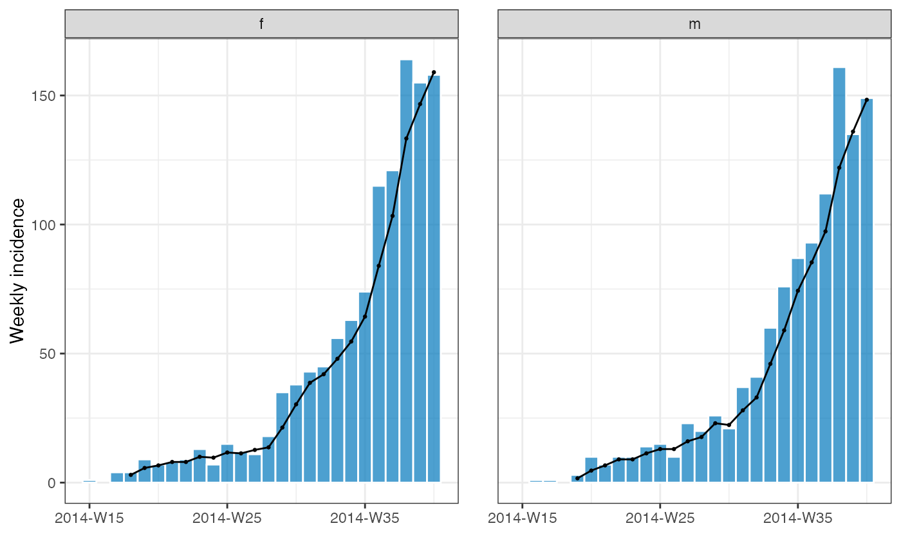

add_rolling_average.Rdadd_rolling_average() adds a rolling average to an incidence2::incidence()
object. If x is a grouped this will be a dplyr::rowwise() type object.
If x is not grouped this will be a subclass of tibble.
add_rolling_average(x, ...) # S3 method for default add_rolling_average(x, ...) # S3 method for incidence2 add_rolling_average(x, before = 2, ...)
| x | An incidence2::incidence object. |
|---|---|
| ... | Not currently used. |
| before | how many prior dates to group the current observation with. Default is 2 days. |
An object of class incidence2_rolling.
If groups are present the average will be calculated across each grouping, therefore care is required when plotting.
if (requireNamespace("outbreaks", quietly = TRUE) && requireNamespace("incidence2", quietly = TRUE)) { data(ebola_sim_clean, package = "outbreaks") dat <- ebola_sim_clean$linelist inci <- incidence2::incidence(dat, date_index = date_of_onset, interval = "week", last_date = "2014-10-05", groups = gender) ra <- add_rolling_average(inci, before = 2) plot(ra, color = "white") inci2 <- incidence2::regroup(inci) ra2 <- add_rolling_average(inci2, before = 2) plot(ra, color = "white") }#>#> Warning: Removed 4 rows containing missing values (position_stack).#> Warning: Removed 4 rows containing missing values (position_stack).